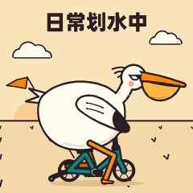
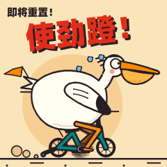
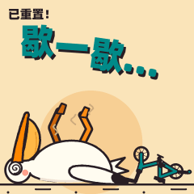
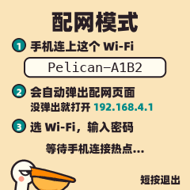
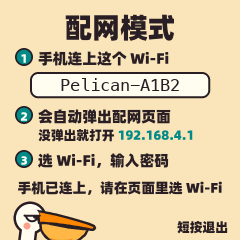
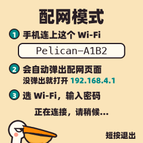
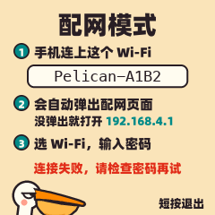
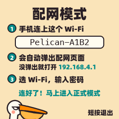

平时
日常划水中
没有重置消息。鹈鹕不踩脚蹬，两脚往地上一蹬，拖着腿滑一段，眯着眼吹口哨，忽远忽近地绕着走。
RESET PELICAN · 使用说明
一只骑车的鹈鹕，替你盯着 Codex 额度什么时候重置。快重置了，它拼命蹬；重置完了，它瘫在地上歇；平时，它就在那儿划水。

联网后，设备每 5 分钟查一次重置状态，自己决定放哪一段。
没有重置消息。鹈鹕不踩脚蹬，两脚往地上一蹬，拖着腿滑一段，眯着眼吹口哨，忽远忽近地绕着走。

重置快来了。鹈鹕骑着儿童车拼命蹬，上身一本正经，腿蹬出了残影，汗往后甩。

刚重置完。鹈鹕仰面瘫在地上，蚊香眼，肚子一起一伏；车翻在一边，前轮还在空转。
| 36 小时内即将重置 | 72 小时内刚重置完 | 显示 |
|---|---|---|
| 是 | 任意 | 使劲蹬 |
| 否 | 是 | 歇一歇 |
| 否 | 否 | 日常划水中 |
两件事同时成立时，优先显示「使劲蹬」：快要重置是更新的消息。
板子侧边只有一个按键。所有动作都在松手时执行；按住期间，屏幕中间会告诉你松手后会发生什么。
| 按住多久 | 按住时屏幕提示 | 松手后 |
|---|---|---|
| 不到 3 秒 | 无 | 演示模式：换下一个画面 正式模式：马上刷新一次 配网中：退出配网 |
| 3 – 10 秒 | 在演示模式和正式模式之间切换 | |
| 10 秒以上 | 进入配网，换一个 Wi-Fi |
插电时别按住按键。这个键同时是芯片的 BOOT 键，插 USB 那一刻按着它，设备会进入下载模式，屏幕不亮。拔掉重插就好。
不用电脑。一部手机，两分钟。
新设备第一次切到正式模式（按住 3 秒后松手），会直接进入配网。以后想换 Wi-Fi，按住 10 秒后松手。屏幕会变成这样，中间的方框里是设备开出的热点名字，每台都不一样。

在手机的 Wi-Fi 设置里找到 Pelican-XXXX（后四位以屏幕上为准），直接连，不需要密码。连上后手机一般会自动弹出配网页面；没弹出的话，用浏览器打开 192.168.4.1。
页面会列出设备扫描到的网络，信号强的在前。列表里没有的，可以在下面手动输入名字。
只支持 2.4 GHz 网络。
重新扫描
连好了！鹈鹕马上进入正式模式，可以关掉这个页面。
手机页面和设备屏幕会同步显示进度。连上后，设备记住这个 Wi-Fi，8 秒后自动进入正式模式，开始显示真实的重置状态。




配网页面 10 分钟没人操作，设备会自动退出，回到之前的模式。
按住 3 – 10 秒后松手，在两者之间切换。设备会记住你的选择，断电重启也不变。
不联网。短按一下换一个画面，适合拿给朋友看全部动画。
连 Wi-Fi，每 5 分钟查一次重置状态，自动选画面。短按马上刷新一次。
大多数问题，重新配一次网就能解决。
正式模式下，最近一次查询失败了：可能是 Wi-Fi 断了，也可能是查询服务器暂时连不上。设备会保持上一次的画面，5 分钟后自动再试，恢复后红点自己消失。
想马上重试，短按一下。一直有红点，检查路由器，或者按住 10 秒重新配网。
最常见的三个原因：密码输错了；选的是 5 GHz 网络（设备只支持 2.4 GHz，双频路由器通常会有一个名字带 5G 的，别选它）；设备离路由器太远。
用手机浏览器打开 192.168.4.1。部分手机会提示「此网络无法访问互联网」，选择保持连接即可。
按住按键 10 秒，看到「进入配网」后松手，重新走一遍配网。新的 Wi-Fi 会替换旧的。
插电的时候是不是按着按键？那样会进下载模式。松开按键，拔掉重插。
重置完成后最多 72 小时。期间如果又收到「36 小时内要重置」的消息，会提前切回「使劲蹬」。
设备向一台查询服务器请求状态，服务器汇总公开的 Codex 重置公告。设备只读这个结果，不需要登录任何账号，也不会上传你的数据。
可以一直插着。屏幕背光常亮，整机大约半瓦，比手机充电器待机稍多一点。
小东西，参数也不多。